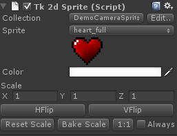

Documentation
Script Reference
Forum
Documentation
Script Reference
Forum

Collection & Sprite - Select a sprite collection, and a sprite from within it.
Color - This color is applied to the vertex colors, so you can use this in your custom shaders to do various things. The provided shaders will tint the texture by the vertex colors.
Scale - Change the scale on the sprite. This is the preferred way to change scale on your sprite, as opposed to changing the local scale on the transform. Changing scale here will not break dynamic batching.
HFlip - Flip sprite horizontally
VFlip - Flip sprite vertically
Reset scale - Resets the sprite scale to 1, 1, 1
Bake Scale - Transfers transform.localScale to sprite.scale and resets transform.localScale to 1, 1, 1. This lets you use the built in unity scale widgets, and clicking on Bake Scale will recursively transfer all localScale values, so dynamic batching will work once more.
1:1 - Use this when your camera size doesn't match the sprite collection size. For example, if your sprite collection ortho size is 1.0 and your camera is a perspective camera (for parallax), simply click Make Pixel Perfect and the sprite will be rescaled to match the texture size in the viewport.